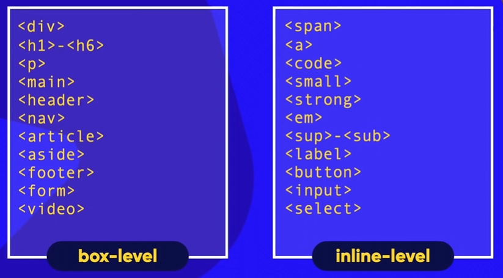

Box Model
O box model é um conceito fundamental no CSS que descreve como os elementos HTML são representados como caixas retangulares na página. Cada elemento possui uma caixa que consiste em quatro partes principais: conteúdo, preenchimento (padding), borda (border) e margem (margin).
O box model é importante porque afeta o layout e o espaçamento dos elementos na página. Compreender como funciona o box model permite que você controle melhor a aparência e o posicionamento dos elementos em seu design.
O box model é composto por:
- Conteúdo: A área onde o texto e as imagens aparecem.
- Preenchimento (padding): O espaço entre o conteúdo e a borda do elemento.
- Borda (border): A linha que envolve o elemento.
- Margem (margin): O espaço entre a borda do elemento e os elementos adjacentes.
Box Level
O box level é uma propriedade CSS que define o nível de empilhamento de um elemento em relação a outros elementos na página. O box level pode ser definido usando as propriedades z-index e position.
O z-index é um valor numérico que determina a ordem de empilhamento dos elementos. Elementos com um z-index maior serão exibidos acima de elementos com um z-index menor. A propriedade position define como o elemento é posicionado na página (por exemplo, estático, relativo, absoluto ou fixo).
content
padding
border
outline
margin?